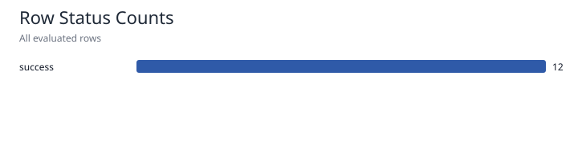
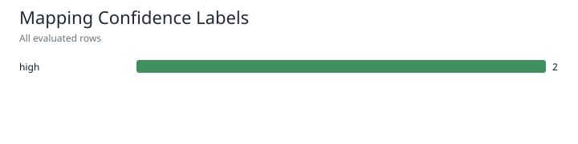
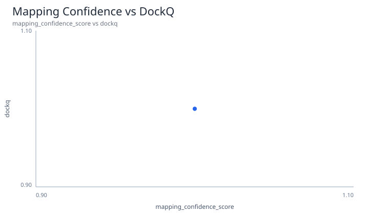
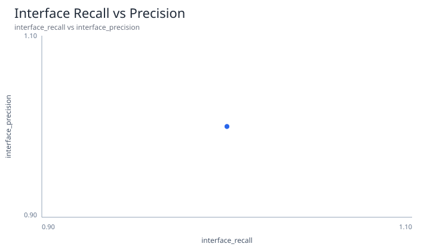
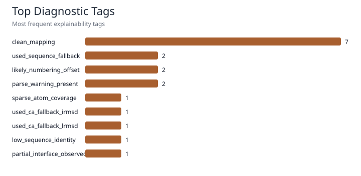

This report is a lightweight visual audit layer over the evaluator outputs. It is intended for benchmark triage, mapping-quality review, and result explainability.





No low-confidence or failed rows.
| target_id | count | mean_mapping_confidence_score | mean_interface_f1 | mean_dockq | success_rate_dockq_ge_0_23 |
|---|---|---|---|---|---|
| T001 | 1 | 1.0 | 1.0 | 1.0 | 1.0 |
| T002 | 1 | 1.0 | 1.0 | 1.0 | 1.0 |